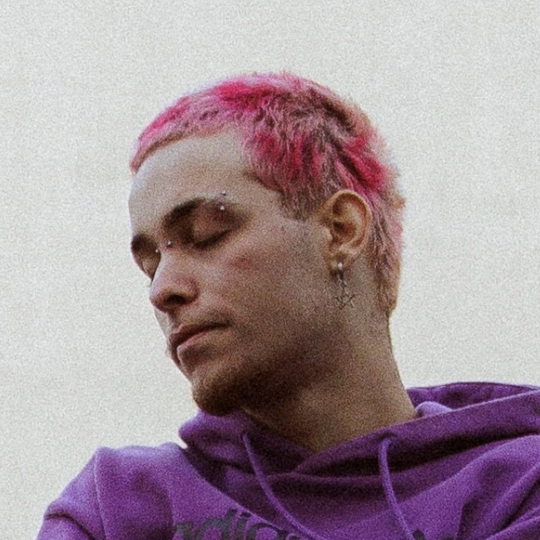

Artistas em Ascensão

Big Rush
Gênero:Plug, Trap
Seguidores: 121k

Link do Zap
Gênero:Trap
Seguidores:58.2k

Skinless
Gênero:Death Metal
Seguidores: 18.5K

Nodachi
Gênero:Metal progressivo
Seguidores: 406

Stray From The Path
Gênero: Nu Metal
Seguidores: 78.7K
Surra
Gênero: Trash Punk
Seguidores: 19.3K